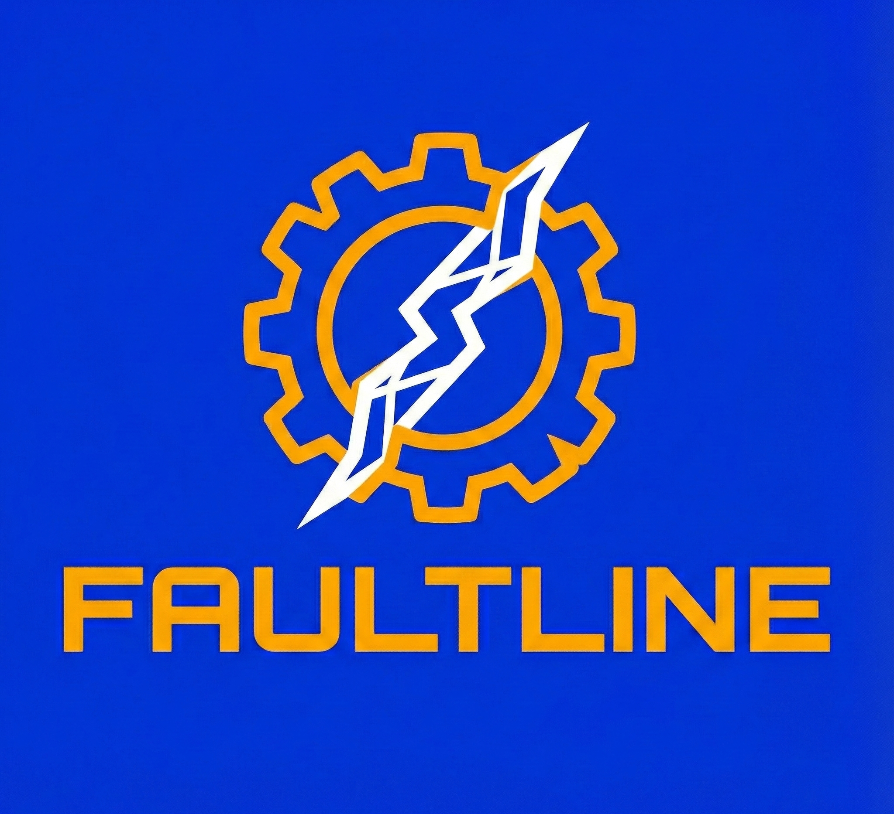

FAULTLINE
Robotic System State & Fault Awareness
01. Explicit Engineering Assumptions
Scope
- Single Actuator (1 DOF)
- Open-Loop Monitoring Only
- Fixed Telemetry Rate (5Hz)
Constraints
- Bounded Gaussian Noise (±0.2°)
- Fail-Safe Priority Logic
- Conservative Yield Thresholds
02. System Data Flow
TELEMETRY
Sensors & Noise
FAULT RULES
Detection Engine
STATE
Latch Logic
mission_control.log
ONLINE
position_tracking.dat
LIVE PLOT
CMD (Ref)
MEAS (Sens)
System Boot Sequence Initiated...
Telemetry Stream: ACQUIRED
03. Fault Traceability & Response Logic
| Fault Condition | Severity | System Action | Latch Policy |
|---|---|---|---|
| Thermal Warning (>50°C) | WARN | Decay Confidence | Auto-Clear |
| Thermal Critical (>75°C) | FAULT | Enter SAFE MODE (Halt) | LATCHED |
| Actuator Stall (>3.0A) | FAULT | Current Clamp / Freeze | LATCHED |
| Position Error (>5.0°) | FAULT | Enter SAFE MODE (No Trust) | LATCHED |
Test Harness
Inject faults to validate state logic.
Red faults latch and require manual reset to demonstrate safety protocols.
04. Safe Mode Behavior
SAFE MODE is not just a UI state. It triggers specific hardware protection constraints:
- Motion Command: FROZEN
- Motor Current: CLAMPED
- State Estimator: HALTED
- Faults: LATCHED
05. Confidence Physics
System trust is modeled with inertia. It decays slowly on warning, drops instantly on fault, and recovers linearly only after stability is proven.